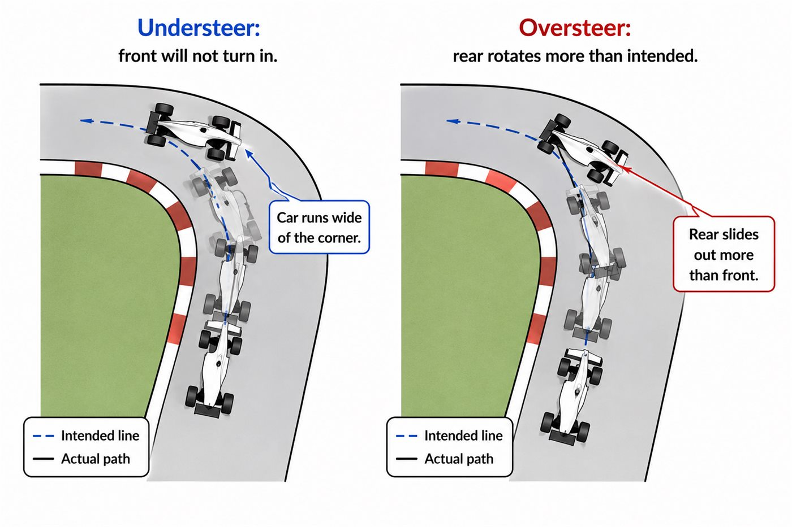
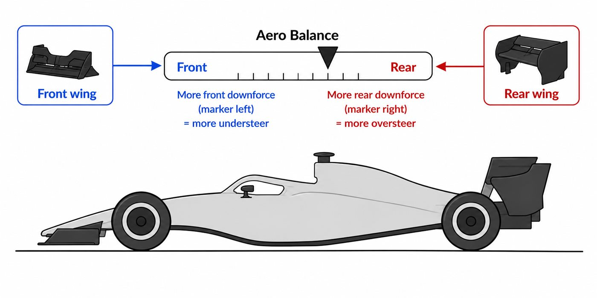
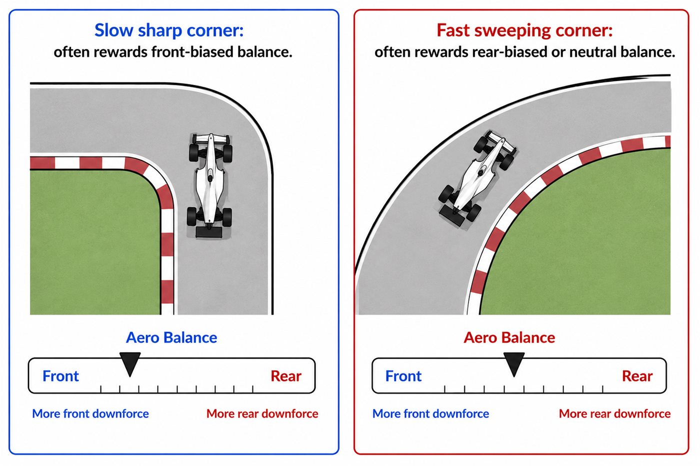

01 - BIG IDEA
Total downforce is not the whole story
A car with lots of downforce can still feel terrible if the load is in the wrong place.
The front wing, floor and rear wing all add downforce at different locations. The driver feels the relationship between front grip and rear grip, not just the total number.
02 - TWO WAYS BALANCE GOES WRONG
Understeer and oversteer
Understeer means the front refuses to turn in and the car runs wide. Oversteer means the rear rotates more than intended and the back feels loose.

03 - CENTER OF PRESSURE
One point to summarise all aero load
The center of pressure is the point where you can imagine all the car's downforce acting together. If it shifts forward, the car becomes more front-biased. If it shifts rearward, it becomes more rear-biased.
04 - SHIFTING BALANCE
Front wing and rear wing are connected
Increasing front wing load moves balance forward. Increasing rear wing load moves balance rearward. Engineers think about both together because changing one changes the car's handling relationship.

05 - TRACK TYPE
Different corners want different balance
A slow sharp corner can reward more front bite. A fast sweeping corner often wants neutral or rear-biased stability. This is why setup is never one-size-fits-all.

Sharp response, but rear can feel nervous.
Stable rear, but front can push wide.
Predictable grip where the driver needs it.
GO DEEPER
Books worth opening
Race Car Aerodynamics - Joseph KatzAerodynamic balance and center of pressure.
Tune to Win - Carroll SmithClassic race-car setup and balance thinking.
Motorsport setup guidesUseful for connecting aero balance to mechanical grip.
Finished this lesson? Mark it as complete to track your progress.